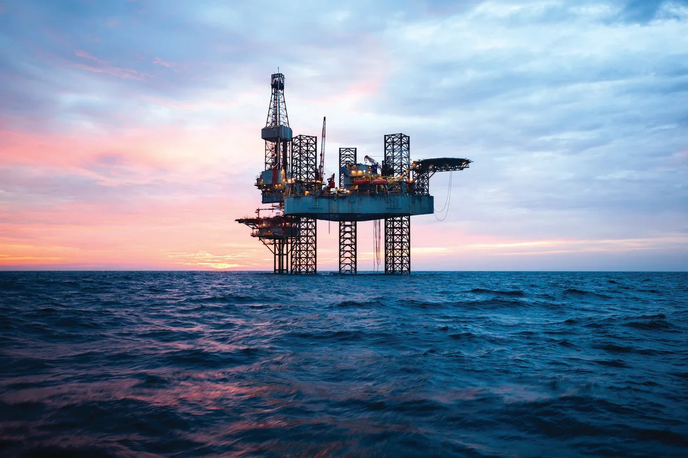

The higher the temperature, the whiter the coral
An oil spill can be defined as either a spill or release of oil into our ocean. Oil spills release a substance called petroleum hydrocarbons into the ocean. Many incidents of spilt oil have occured in the last 100 years ever s ince oil became the main energy source around the world.
These incidents are acknowledged by the governments around the world as “environmental havoc for the wild life involved in the area of the spills”. The unfortunate thing is that oil spills aren't uncommon, in countries such as the United States where they drill oil all of the time. Most of these spills are small like bit bit of a leak when fueling boats but the large oil spills cause effects that may last for decades.
Typically, oil is drilled by huge rigs that have been placed in a specific area. This area is found by ships using sonic sound technology to find oil pockets in the sea. Rigs are then constructed and then drill down large depths to extract the oil, almost like dipping a bucket into a very deep well to grab water, it is a similar concept. There are different types of these rigs, but in this article, the semisubmersibles will be discuessed because they are probably one of two main sources of oil pollution.
Although these rigs are very efficient and effective when it comes to drilling oil from underground deposits, they sometimes have their faults. Oil spills have occured many times because of problems such as pressure overloads, small leaks, pipe failures, etc. These problems have caused catastrophes across our beautiful oceans and there are many famous examples of these spills.
Famous examples of oil spills include The Ixtoc 1 in 1979, The Atlantic Empress in 1979 as well, but the largest ever accidental oil spill was off the gulf of Mexico called Deepwater Horizon in 2010.
This one incident caused an estimated total of 210 million gallons of oil was spilt with a two day explosion causing environmental destruction across the coast of the US and the death of 11 men. The operation was to have a well to tap oil drill that once filled, would be plugged with three concrete plugs and would be taken away by tanker ships. It was originally built in 2001 and in September 2009, got the world record for the deepest oil well ever drilled.
The accident occured on the 20th April 2010,There are theories to what happened, according to various sources, there were four possible causes; dodgy concrete containing the oil, pressure test misinterpreted, the leak itself was not spotted soon enough and a valve failure with the pipe connecting the oil to the concrete tubing. The real reason was due to a build up of natural gasses within one of the concrete storage plugs. This resulted in an overwhelming pressure built up and should have been noticed. Due to technology failure, the pressure was misread and it resulted in a blowout spilling oil everywhere with machinery sparking causing the explosions.
As shown above, huge boats came to battle the blaze by using water from the gulf. However, due to the massive amount of oil, the fire kept buring continously being fuelled and never able to be put out. The flame stayed a light for two whole days only for the rig to sink and continuously approximately 1,000 barrels of oil into the sea everyday.
Over the next two years, there were clean up crews lead primarily by NOAA (National Oceanic and Atmospheric Administration) entering the spillage every day trying to contain the spill as best as possible yet even with all this effort, deepwater horizon was declared to still be leaking oil.
In recent years, there are still beaches and coastal waters polluted by the oil but the situation has been under the control of the US government and oil industries. Not willingly, each party agreed there needed to be more done about the clean up, so over the past 9 years, more than 20% of the oil has been recovered. Unfortunately, the sunken rig is still leaking oil at a fast rate to this day.
The environmental damages these spill cause include black outs of kilometers of water, staining of bird feathers and the mutation of fish and the generations that followed. Once the sea is covered in oil, the side effects is the total wipeout of natural plankton that floats amongst the sea. This leads to smaller fish also dying due to starvation and/or oil contamination. the reason there is no staining of say coral reefs or ocean beds is because oil as a product is lighter than water meaning it floats on the surface.
Because of the oil sitting above the water, when birds fly down to grab food, they are dyed in oil. The result changes the texture of the feathers and causes there insulation abilities to fail, this then leads to hypothermia, difficulty flying and inferior vision essentially killing the bird.
The most significant environmental effects of oil spills is the mutation of fish and the later generations that come. According to an article about Deepwater Horizon written by “The Week,” fish in the gulf before the oil spill had only a tenth of a 1 percent chance of getting skin lesions and sores.
Five years later, the statistic changed to a 4-5% chance of getting these mutations. When in their eggs, some baby tuna have discovered to be born with deformities such as one eye, missing flaps on gills or the worst of all, fish without a dorsal fin. These mutations are not just happening to fish, but also other sea life such as crab and shrimp. For example, scary sights have been seen by fishermen finding eyeless fish, clawless crabs, tumours on a shrimps head, soft shelled crabs when they are supposed to be very sturdy and hard, and sometimes, fish with two mouths. It has afflicted these marine creatures with a plague of diseases and mutations. hugely.
These deformities and mutations unfortunately didn't come directly from oil pollution, but also the clean up chemicals used. Around 2 million gallons (9,092,180 Litres) of chemical dispersants were used to shrink the oil particles and have the ability to mix with water. Although it cleaned up one problem, these chemicals caused another. The residue left by these chemicals infiltrate the immune system of living organisms and mutate the genetic source code in terrible ways.
Oil Spills are some of the hardest problems to find a solution for because the damages caused are very hard to clean. The reason why oil is such a hard product to clean up is because just like water, it is a liquid making separation techniques very difficult. Over the past 10 years, the need for oil has reduced whilst the cleaning continued.
The clear way to prevent these spills from occuring is to stop using oil. Oil, specifically crude oil is used to fuel things such as planes, cars, trucks, even the boats used to clean oil spills are fueled by crude oil. So many things are fuelled by oil and have been for the past 100 years. It is not as simple as just stopping the use of oil because so many other industries would also be affected.
However, people have found ways to reduce their oil usage by quite a lot. The company Tesla has been making electric cars for years now, of course, its fuel source is obviously electricity which is stored in a high voltage battery, meaning it is more ecofriendly and reduces the need for oil as a whole. Other car companies have now caught onto the trend of "going electric" and now sell the first generation of sustainable energy cars.
Although these sustainable energy cars and soon to be planes will solve the need for oil long term, there is still millions of tonnes of oil lying on the surface of our oceans. Thankfully, in the past 10 years, oil clean up and recovery operations have obtained new techniques and technology to purify the water.
As mentioned previously, oil floats on the waters surface due to the lightness of the liquid. As a result of this, boats of all kinds have been able to work together to recover the oil.
Bottsand ship
Pioneering spirit
Oil Skimmers
Oil Recovery Vessels
Shown above are only a few of the oil cleaning boats but have play big roles when it comes to separating the oil from the water. Starting with the Bottsand Ship. This boat has a bow which can open up to 65 degrees, this makes the perfect gap for pumping the oily water and then easily separates the two liquids.
The Pioneering Spirit. This has been classed as one of the largest sea bound construction units in the world. It has been used to install huge oil platforms onto the sea also installing the drilling units needed to obtain the oil. Because of its heavy-lifiting capabilities, nowadays it has been used to deconstruct and take away oil plants preventng further oil pollution from these rigs
The smallest of the bunch, oil skimmers. These small boats are sent out in swarms whenever there is an oil spill. Thousands of these boats were sent to Deep Water Horizon to contain and separate the oily water, of course the capablilties of these boats is a lot less than most when it comes to efficiency and storage. Nonetheless, these ships are a helping hand in the oil clean up department.
Oil recovery vessels are probably the most important of all. These ships come in different shapes and sizes and are utilised for different kinds of oil spills. The largest ships are sent out far into the sea, whilst the smaller ones are normally used in coastal areas, closer to shore. Essentially, they go through and collect huge tanks of oil contaminated water and separate the two liquids just like oil skimmers except on a larger scale.
Although all these ships vary in size and capabilities, they all have one thing in common, they use physical methods to separate the oil from the water.
People have resorted to items such as dispersants, bioremediation, even burning the oil on the waters surface has seen effective results. Some may argue that these methods are harmful to the environment, they would be correct, but in the long term, getting rid of this oil means the aquatic ecosystem can slowly recover and thrive with life once again.